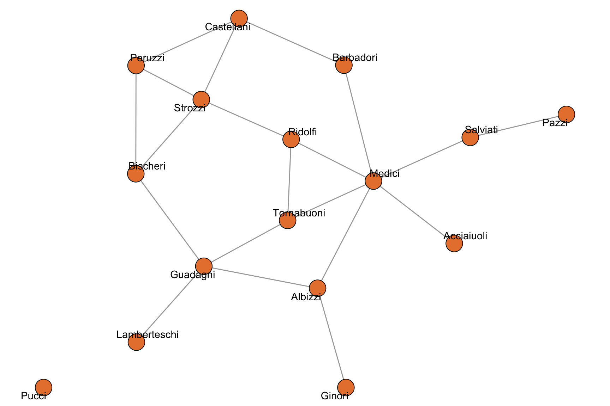
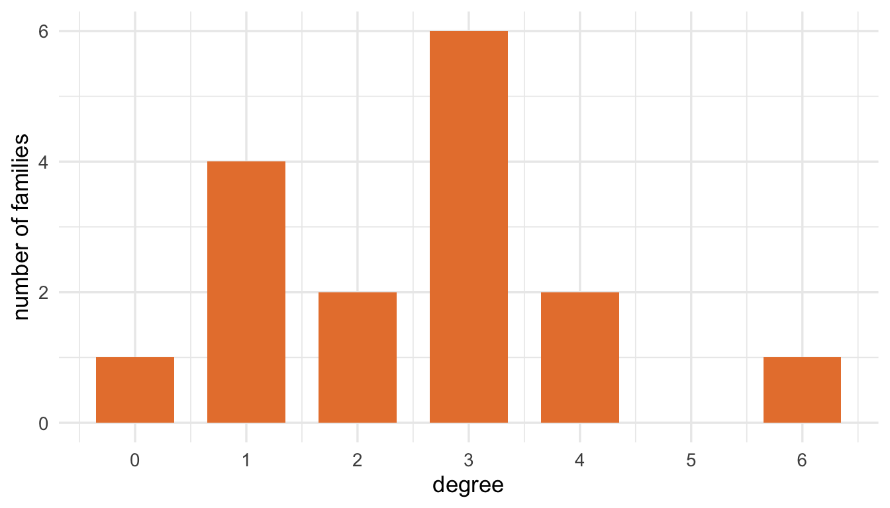
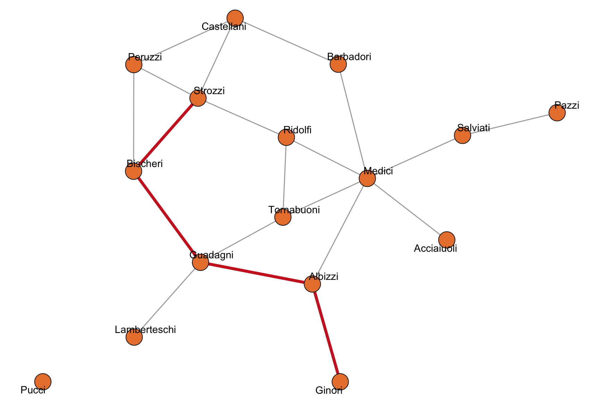
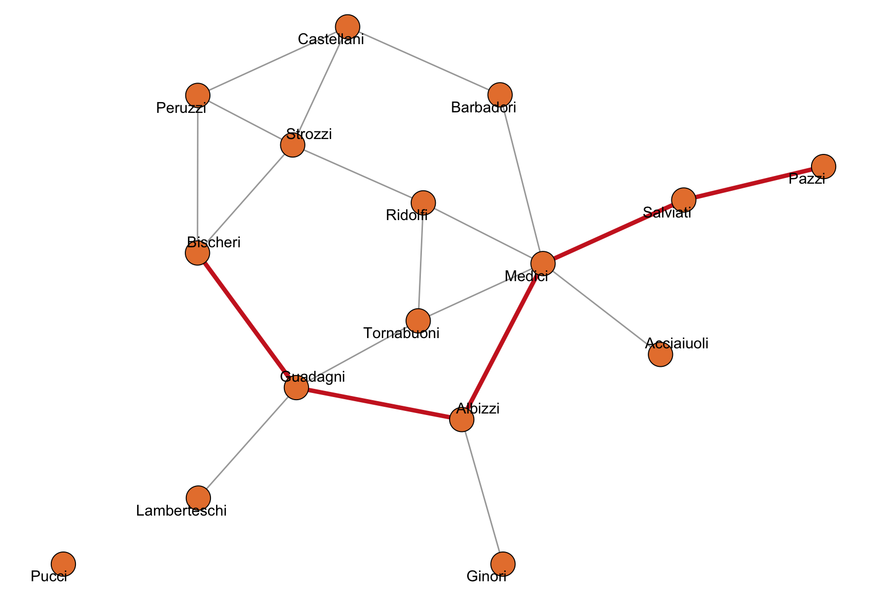
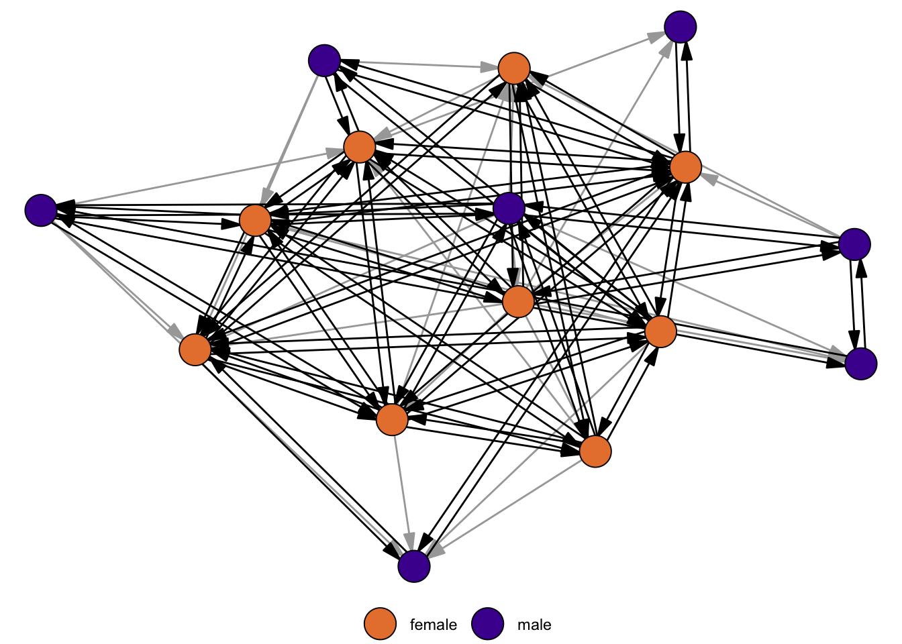
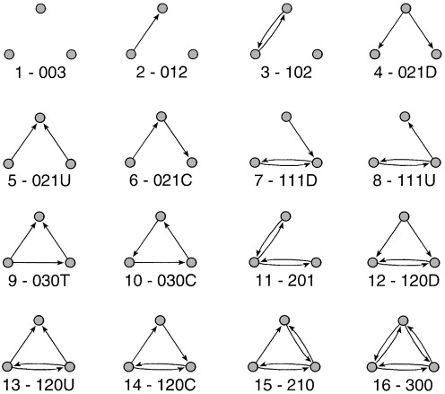
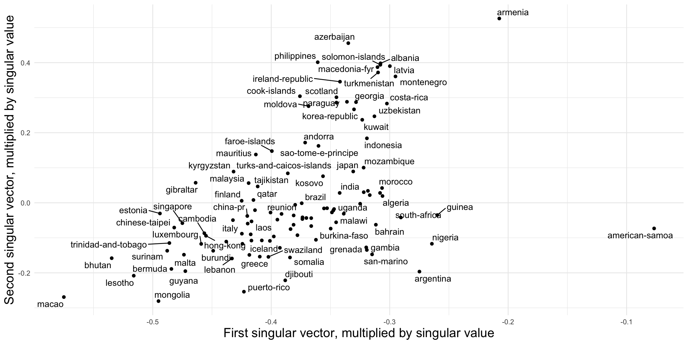
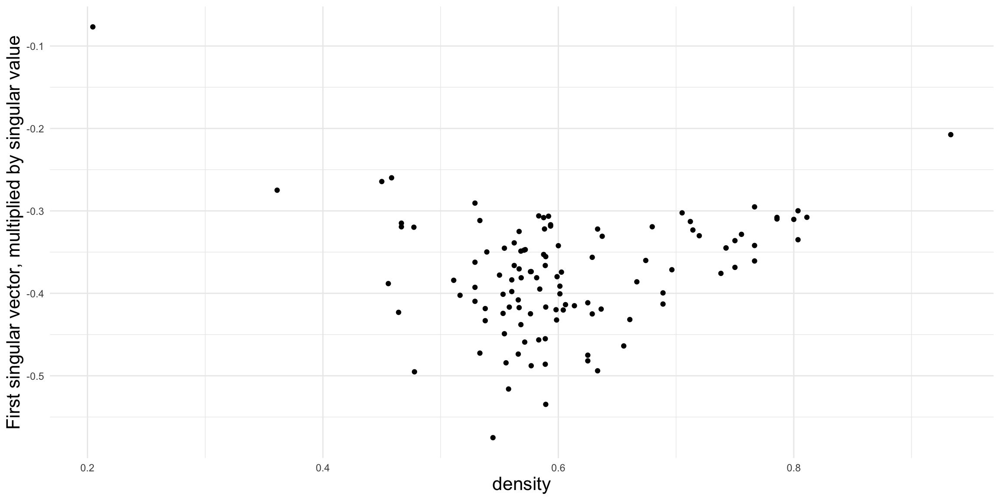
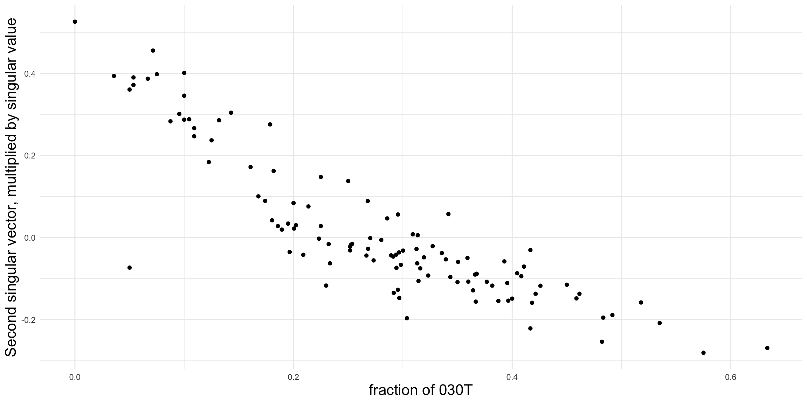

library(igraph)
library(networkdata)2 Basic Network Statistics
Before tackling more advanced questions about a network, like who is most central, which groups hold it together, how it compares to a random baseline, it pays to know a handful of simple numbers that summarize its overall shape. How many nodes and edges does the network contain? Are all nodes reachable from one another? How far apart are they on average? Do neighbors of a node tend to be neighbors of each other as well? This chapter introduces these foundational descriptors: network size, density, degree, distance, components, diameter, and transitivity for undirected networks, and reciprocity and the dyad and triad census for directed networks. Each descriptor captures a different structural property, and together they form the standard first-pass description of an empirical network. More specialized notions, in particular centrality, are deferred to Chapter 3.
2.1 Packages Needed for this Chapter
2.2 An Example Network
To illustrate the descriptors in this chapter we use the marriage network of Florentine families compiled by Padgett and Ansell (1993), available as flo_marriage in the networkdata package. Nodes are the 16 leading families of 15th-century Florence, and an undirected edge connects two families if they were joined by at least one marriage. The network is a classic example in social network analysis: small enough to be inspected at a glance, yet rich enough to exhibit the full range of basic structural features, including an isolated node (the Pucci family) that will be useful when we discuss connected components.
data("flo_marriage")
flo_marriageIGRAPH bc7fb16 UN-- 16 20 --
+ attr: name (v/c), wealth (v/n), priors (v/n), ties (v/n)
+ edges from bc7fb16 (vertex names):
[1] Acciaiuoli--Medici Albizzi --Ginori Albizzi --Guadagni
[4] Albizzi --Medici Barbadori --Castellani Barbadori --Medici
[7] Bischeri --Guadagni Bischeri --Peruzzi Bischeri --Strozzi
[10] Castellani--Peruzzi Castellani--Strozzi Guadagni --Lamberteschi
[13] Guadagni --Tornabuoni Medici --Ridolfi Medici --Salviati
[16] Medici --Tornabuoni Pazzi --Salviati Peruzzi --Strozzi
[19] Ridolfi --Strozzi Ridolfi --Tornabuoni Figure 2.1 shows the network. The Medici sit at the structural centre, while the Pucci are disconnected from the rest.

2.3 Network Size
The two most basic descriptors of a network are its order, the number of nodes, and its size, the number of edges. In igraph they are obtained with vcount() and ecount().
vcount(flo_marriage)[1] 16ecount(flo_marriage)[1] 20summary() prints the same information together with the graph type (undirected/directed, named/unnamed, weighted/unweighted) and the list of vertex and edge attributes.
summary(flo_marriage)IGRAPH bc7fb16 UN-- 16 20 --
+ attr: name (v/c), wealth (v/n), priors (v/n), ties (v/n)2.4 Adjacency Matrix and Neighbors
Every simple network can be represented as a square adjacency matrix \(A\), where \(a_{uv} = 1\) if nodes \(u\) and \(v\) are connected by an edge and \(0\) otherwise. For an undirected network, this matrix is symmetric.
as_adjacency_matrix(flo_marriage, sparse = FALSE)[1:6, 1:6] Acciaiuoli Albizzi Barbadori Bischeri Castellani Ginori
Acciaiuoli 0 0 0 0 0 0
Albizzi 0 0 0 0 0 1
Barbadori 0 0 0 0 1 0
Bischeri 0 0 0 0 0 0
Castellani 0 0 1 0 0 0
Ginori 0 1 0 0 0 0The neighbors of a node are the nodes directly connected to it, i.e. the non-zero entries in its row of the adjacency matrix.
neighbors(flo_marriage, "Medici")+ 6/16 vertices, named, from bc7fb16:
[1] Acciaiuoli Albizzi Barbadori Ridolfi Salviati Tornabuoni2.5 Degree and Degree Distribution
The degree of a node is the number of its neighbors. It is the most elementary measure of a node’s involvement in a network and will reappear in Chapter 3 as the simplest centrality index.
degree(flo_marriage) Acciaiuoli Albizzi Barbadori Bischeri Castellani Ginori
1 3 2 3 3 1
Guadagni Lamberteschi Medici Pazzi Peruzzi Pucci
4 1 6 1 3 0
Ridolfi Salviati Strozzi Tornabuoni
3 2 4 3 A useful summary is the average degree \(\bar{d} = \tfrac{1}{n} \sum_{v} d(v) = \tfrac{2m}{n}\), where \(n\) and \(m\) denote the number of nodes and edges.
mean(degree(flo_marriage))[1] 2.5Zooming out from individual nodes, the degree distribution tabulates how many nodes have each possible degree. It is a simple fingerprint of the network’s structure: many empirical networks have highly skewed degree distributions, with most nodes of low degree and a few hubs of very high degree.
table(degree(flo_marriage))
0 1 2 3 4 6
1 4 2 6 2 1 Figure 2.2 shows the degree distribution of the Florentine marriage network. Most families have only one to three marriage ties, while the Medici stand out with six.

2.6 Density
The density of a network is the fraction of possible edges that are actually present. For an undirected network on \(n\) nodes, the maximum number of edges is \(\binom{n}{2}\), so the density is \(2m / (n(n-1))\). It lies between \(0\) (empty graph) and \(1\) (complete graph).
c(
empty = edge_density(make_empty_graph(10)),
florentine = edge_density(flo_marriage),
full = edge_density(make_full_graph(10))
) empty florentine full
0.0000000 0.1666667 1.0000000 Empirical networks almost always fall towards the lower end of this range, and as the number of nodes grows most real-world networks become increasingly sparse.
2.7 Shortest Paths and Distances
A path is a sequence of edges connecting two nodes without revisiting any node. A shortest path is a path with the minimum number of edges, and its length is the distance between the two nodes. There may be several shortest paths of the same length between a given pair of nodes.
shortest_paths(flo_marriage, from = "Ginori", to = "Strozzi", output = "vpath")$vpath[[1]]
+ 5/16 vertices, named, from bc7fb16:
[1] Ginori Albizzi Guadagni Bischeri Strozzi One such shortest path between the Ginori and the Strozzi is highlighted in Figure 2.3.

Computing distances() without specifying source and target returns the full pairwise distance matrix.
distances(flo_marriage)[1:6, 1:6] Acciaiuoli Albizzi Barbadori Bischeri Castellani Ginori
Acciaiuoli 0 2 2 4 3 3
Albizzi 2 0 2 2 3 1
Barbadori 2 2 0 3 1 3
Bischeri 4 2 3 0 2 3
Castellani 3 3 1 2 0 4
Ginori 3 1 3 3 4 02.8 Connected Components
A network is connected if every pair of nodes is joined by at least one path. If it is not, it splits into connected components: maximal subsets of nodes within which every pair is connected. Isolated nodes, i.e. nodes with degree zero, form components of size one.
is_connected(flo_marriage)[1] FALSEcomponents(flo_marriage)$membership
Acciaiuoli Albizzi Barbadori Bischeri Castellani Ginori
1 1 1 1 1 1
Guadagni Lamberteschi Medici Pazzi Peruzzi Pucci
1 1 1 1 1 2
Ridolfi Salviati Strozzi Tornabuoni
1 1 1 1
$csize
[1] 15 1
$no
[1] 2The Florentine marriage network has two components: one containing the 15 families that are joined by marriage ties, and the singleton component consisting of the Pucci. Because no path connects Pucci to any other family, the corresponding entries in the distance matrix are not numbers but Inf.
distances(flo_marriage, v = "Pucci") Acciaiuoli Albizzi Barbadori Bischeri Castellani Ginori Guadagni
Pucci Inf Inf Inf Inf Inf Inf Inf
Lamberteschi Medici Pazzi Peruzzi Pucci Ridolfi Salviati Strozzi
Pucci Inf Inf Inf Inf 0 Inf Inf Inf
Tornabuoni
Pucci Inf2.9 Diameter and Mean Distance
The diameter of a connected network is the length of the longest shortest path, and the mean distance is the average shortest-path length over all reachable pairs of nodes. Both quantify how “spread out” a network is: small values indicate that every node is a few steps from every other, a property often associated with small-world networks. By default igraph ignores unreachable pairs when computing both statistics.
diameter(flo_marriage)[1] 5mean_distance(flo_marriage)[1] 2.485714A diameter path is shown in Figure 2.4. Reaching the Pazzi from the Bischeri requires traversing five marriage ties.

2.10 Transitivity
Transitivity in networks captures the idea that if node A is connected to B, and B is connected to C, then A is also likely to be connected to C, often summarized as “a friend of a friend is also a friend.” This concept is closely related to the clustering coefficient, which measures the tendency of a node’s neighbors to be connected to each other. A high clustering coefficient indicates that many such triadic closures occur, meaning that neighbors of a node are also connected to each other. Thus, transitivity provides an intuitive interpretation of clustering: it reflects the tendency of networks to form cohesive, locally dense structures where indirect relationships become direct ties. Later, we will return to this idea below using the triad census, which provides a more detailed account of how different three-node configurations capture patterns such as transitivity.
The global transitivity is the ratio of the number of closed triples (triangles, counted three times) to the number of connected triples. The local transitivity of a node is the fraction of pairs of its neighbors that are themselves connected.
transitivity(flo_marriage, type = "global")[1] 0.1914894head(transitivity(flo_marriage, type = "local", isolates = "zero"))Acciaiuoli Albizzi Barbadori Bischeri Castellani Ginori
0.0000000 0.0000000 0.0000000 0.3333333 0.3333333 0.0000000 In social networks we generally expect transitivity to be sizeable: if two families are both allied with the Medici, there is a reasonable chance that they are allied with each other as well (“the friend of my friend is also my friend”). The Florentine marriage network has a global transitivity of about \(0.19\), confirming this tendency, albeit at a modest level.
2.11 Assortativity
Assortativity measures the tendency of nodes in a network to connect to other nodes that are similar to them according to some attribute. It provides insight into whether a network is structured around similarity (homophily) or difference (heterophily), which has important implications for processes such as information flow, contagion, and group formation.
2.11.1 Assortativity based on numerical attribute
One common form is degree assortativity, which evaluates whether nodes with similar degrees tend to be connected. This can be computed as:
assortativity(flo_marriage, degree(flo_marriage))[1] -0.3748379A negative value indicates disassortative mixing, meaning that highly connected nodes tend to connect to nodes with fewer connections, while a positive value indicates that nodes tend to connect to others with similar degree.
2.11.2 Assortativity based on nominal attribute
Assortativity can also be computed based on categorical (nominal) attributes. For example, in the Florentine marriage network, one might examine whether families tend to form ties with others sharing the same attribute. Here, we use the attribute wealth which we dichotomize based on the median into two groups:
- Low = below or equal to the median (lower wealth)
- High = above the median (higher wealth)
# get wealth attribute
wealth <- V(flo_marriage)$wealth
# compute median
med_wealth <- median(wealth, na.rm = TRUE)
# create categorical variable
wealth_cat <- ifelse(wealth <= med_wealth, "low", "high")
# compute assortativity
assortativity_nominal(flo_marriage, as.factor(wealth_cat))[1] -0.3299233A value of -0.3299233 indicates moderate disassortative mixing or heterophily. in other words, t families are more likely to form marriage ties with others from a different wealth category (i.e., high-wealth families marrying into lower-wealth families and vice versa), rather than with families of similar wealth.
2.12 Directed Networks: Reciprocity
The descriptors above apply to undirected networks. For directed networks, additional measures capture the asymmetry of ties. The simplest is reciprocity, defined as the proportion of directed edges for which the reverse edge is also present.
Reciprocity is a central concept in social exchange theory, where it reflects mutual exchange relationships between actors. Social interactions are often shaped by considerations of costs and benefits, and reciprocated ties indicate balanced or mutually beneficial relationships.
To illustrate this, we use rhesus, a network of grooming relations among a group of rhesus monkeys.
data("rhesus")
reciprocity(rhesus)[1] 0.7567568About 76% of edges are reciprocated in the network. Figure 2.5 highlights the reciprocated edges in black and the asymmetric edges in grey.

Reciprocity varies across types of networks. In friendship networks, ties are often reciprocated because they reflect trust, mutual recognition, and emotional support. In contrast, in hierarchical networks (such as organizational or leadership structures), reciprocity is less common because relationships are inherently asymmetric.
Overall, reciprocity provides insight into the balance, trust, and structure of relationships in directed networks, helping distinguish between mutual exchanges and asymmetric dependencies.
2.13 Dyad and Triad Census
The dyad census categorizes all possible pairs of nodes in a directed network by their mutual-connection status. A dyad is mutual if both nodes have a directed edge to the other, asymmetric if only one of the two edges is present, and null if neither is. The census gives an overview of the prevalence of reciprocity and one-sided relations in the network.
dyad_census(rhesus)$mut
[1] 42
$asym
[1] 27
$null
[1] 51Note that for undirected networks, there are only two types of dyads: either a tie is present or it is absent.
More informative than the dyad cencus is the triad census, which counts the occurrence of each of the \(16\) possible configurations of edges among three nodes in a directed network (see Figure 2.6). Triads are labelled using the MAN notation, often written as xyzL, where x is the number of reciprocated (mutual) ties, y is the number of asymmetric ties, and z is the number of null ties; the optional letter L (U, C, D, or T) distinguishes triads that share the same xyz counts but differ in structure.

triad_census(rhesus) [1] 49 72 115 16 12 11 50 50 2 0 54 13 12 7 58 39Note that for undirected networks, the triad census is simpler, as there are only four possible triad types based on the number of edges present (0, 1, 2, or 3).
Different triad types are useful because they reveal local structural patterns that are not visible at the dyad level. For example, certain triads capture reciprocity, hierarchy, or transitivity (e.g., “a friend of a friend is also a friend”), which are key building blocks of larger network organization. By comparing the frequency of specific triad configurations to what would be expected at random, researchers can identify underlying social processes such as clustering, balance, or dominance structures within the network. We return to this in the inferential part of this book.
2.13.1 Use case: Triad Census
One of the many applications of the triad census is to compare a set of networks. In this example, we are tackling the question of “how transitive is football?” and assess structural differences among a set of football leagues.
data("football_triad")football_triad is a list which contains networks of 112 football leagues as igraph objects. A directed link between team A and B indicates that A won a match against B. Note that there can also be an edge from B to A, since most leagues play a double round robin. For the sake of simplicity, all draws were deleted so that there could also be null ties between two teams if both games ended in a draw.
Below, we calculate the triad census for all networks at once using lapply(). The function returns the triad census for each network as a list, which we turn into a matrix in the second step. Afterwards, we manually add the row and column names of the matrix.
footy_census <- lapply(football_triad, triad_census)
footy_census <- matrix(unlist(footy_census), ncol = 16, byrow = TRUE)
rownames(footy_census) <- sapply(football_triad, function(x) x$name)
colnames(footy_census) <- c(
"003", "012", "102", "021D", "021U", "021C", "111D", "111U",
"030T", "030C", "201", "120D", "120U", "120C", "210", "300"
)
# normalize to make proportions comparable across leagues
footy_census_norm <- footy_census / rowSums(footy_census)
# check the Top 5 leagues
idx <- which(rownames(footy_census) %in% c(
"england", "spain", "germany",
"italy", "france"
))
footy_census[idx, ] 003 012 102 021D 021U 021C 111D 111U 030T 030C 201 120D 120U 120C 210
england 2 10 0 58 31 40 34 44 338 29 19 118 129 143 131
france 1 23 5 30 33 44 48 40 332 41 16 132 108 160 114
germany 0 21 6 27 19 49 38 46 165 16 23 77 79 117 120
italy 1 4 2 35 43 30 30 22 419 38 5 164 116 118 99
spain 0 8 4 27 42 45 32 35 364 43 11 126 105 148 130
300
england 14
france 13
germany 13
italy 14
spain 20Notice how the transitive triad (030T) has the largest count in the top leagues, hinting toward the childhood wisdom: “If A wins against B and B wins against C, then A must win against C”.
In empirical studies, we are not necessarily only interested in transitive triads, but rather in how the triad census profiles compare across networks. We follow Katherine Faust’s suggestion and perform a singular value decomposition (SVD) on the normalized triad census matrix.
footy_svd <- svd(footy_census_norm)SVDs reduce the dimensionality of the data while retaining most of the information. The triad census is 16-dimensional, which is impossible to visualize directly. With an SVD, we can project it to two dimensions and compare the leagues visually in Figure 2.7.
Warning: ggrepel: 35 unlabeled data points (too many overlaps). Consider
increasing max.overlaps
How should we interpret the two dimensions? To investigate, we compare them to two simple network statistics: density and the proportion of 030T triads. In general, any node-, dyad-, or triad-level statistic could be used.
Figure 2.8 shows that density is not strongly related to the first singular vector in this particular example, although it often is for other collections of networks.

Figure 2.9 shows a much clearer relationship between the second singular vector and the proportion of 030T triads, suggesting that the fraction of transitive triads is a good indicator of structural differences among the leagues.

2.13.2 Dyad/Triad Census with Attributes
The R package netUtils implements a version of the dyad and triad census that can account for node attributes.
library(netUtils)The node attribute should be coded as integers from 1 to max(attr). The output of dyad_census_attr() is a data.frame in which each row corresponds to a pair of attribute values, together with the count of asymmetric, symmetric, and null dyads of that combination.
The output of triad_census_attr() is a named vector whose names have the form Txxx-abc, where xxx is the standard triad census code and abc are the attributes of the three nodes involved.
set.seed(1108)
g <- sample_gnp(20, p = 0.3, directed = TRUE)
# add a vertex attribute
V(g)$type <- rep(1:2, each = 10)
dyad_census_attr(g, "type") from_attr to_attr asym_ab asym_ba sym null
1 1 1 0 0 2 43
2 1 2 15 29 6 50
3 2 2 0 0 2 43triad_census_attr(g, "type") T003-111 T003-112 T003-122 T003-222 T012-111 T012-121 T012-112 T012-122
10 46 67 27 44 63 38 34
T012-211 T012-221 T012-212 T012-222 T021D-111 T021D-211 T021D-112 T021D-212
57 82 45 41 11 18 15 30
T021D-122 T021D-222 T102-111 T102-112 T102-122 T102-211 T102-212 T102-222
4 11 3 17 2 4 17 5
T021C-111 T021C-211 T021C-121 T021C-221 T021C-112 T021C-212 T021C-122 T021C-222
14 10 36 20 19 11 22 17
T111U-111 T111U-121 T111U-112 T111U-122 T111U-211 T111U-221 T111U-212 T111U-222
5 7 3 8 3 4 5 6
T021U-111 T021U-112 T021U-122 T021U-211 T021U-212 T021U-222 T030T-111 T030T-121
11 24 20 5 17 8 13 22
T030T-112 T030T-122 T030T-211 T030T-221 T030T-212 T030T-222 T120U-111 T120U-112
5 14 6 7 2 0 2 4
T120U-122 T120U-211 T120U-212 T120U-222 T111D-111 T111D-121 T111D-112 T111D-122
2 0 3 1 2 5 8 3
T111D-211 T111D-221 T111D-212 T111D-222 T201-111 T201-112 T201-121 T201-122
10 5 7 1 1 1 0 2
T201-221 T201-222 T030C-111 T030C-112 T030C-122 T030C-222 T120C-111 T120C-121
1 0 2 13 6 0 1 5
T120C-211 T120C-221 T120C-112 T120C-122 T120C-212 T120C-222 T120D-111 T120D-112
2 3 2 1 1 2 1 1
T120D-211 T120D-212 T120D-122 T120D-222 T210-111 T210-121 T210-211 T210-221
1 3 0 1 0 0 0 0
T210-112 T210-122 T210-212 T210-222 T300-111 T300-112 T300-122 T300-222
0 2 0 0 0 0 0 0 References
Padgett, John F, and Christopher K Ansell. 1993. “Robust Action and the Rise of the Medici, 1400–1434.” American Journal of Sociology 98 (6): 1259–319.